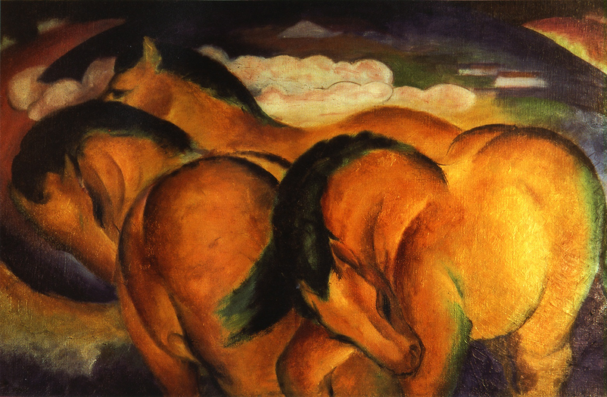

Три причудливо изогнувшиеся
желтые лошадки почти заслоняют
холмистый пейзаж на заднем
плане. Главной темой картины
является цвет: желтый
символизирует пассивное женское
начало, синий - духовность,
красный - чувственность.
Животные олицетворяют для
художника природную силу. Для
воплощения игры своего
воображения он пользуется
светоносным цветом. Все это
делает это произведение одним из
самых запоминающихся образов
Марка. Использование цвета и
символов для выражения
внутренних чувств художника -
характерный прием группы
экспрссионистов, известных под
названием "Der Blaue Reiter"
("Синий всадник"). Два ведущих
участника этого движения -
Василий Кандинский и Франц Марк -
придумали название, потому что
Марк любил лошадей, Кандинский -
всадников, и оба они обожали
синий цвет. Большинство работ
Марка изображают лошадей, но
после 1912 года в его творчестве
усиливается абстрактное начало.
Франц Марк трагически погиб под
Верденом в 1916 году.
Делоне, Явленский, Кандинский,
Марини, Стабс.